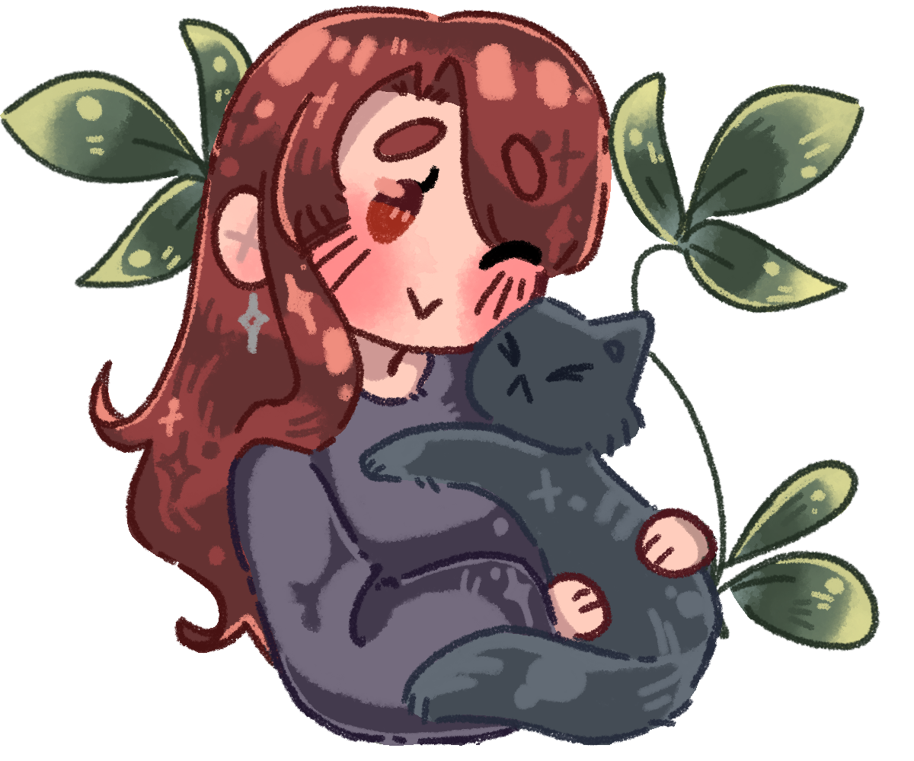
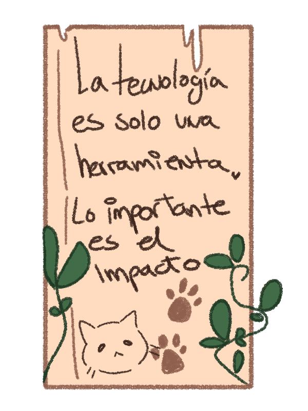
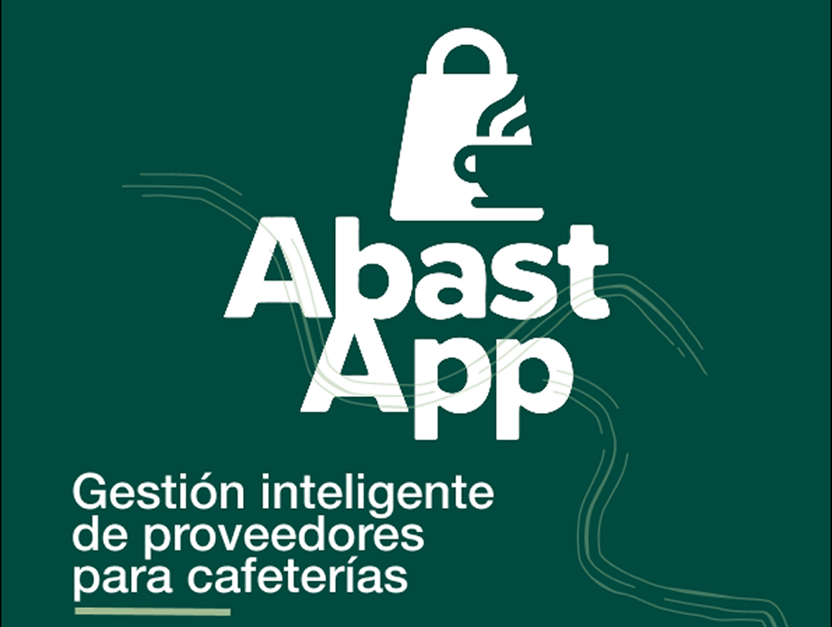
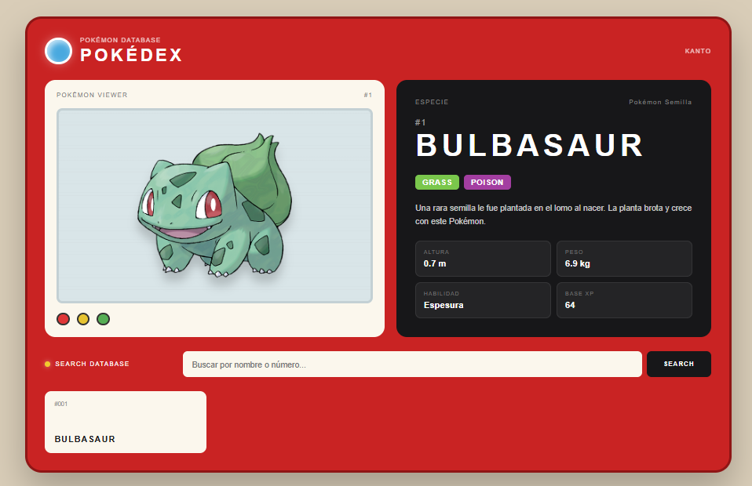
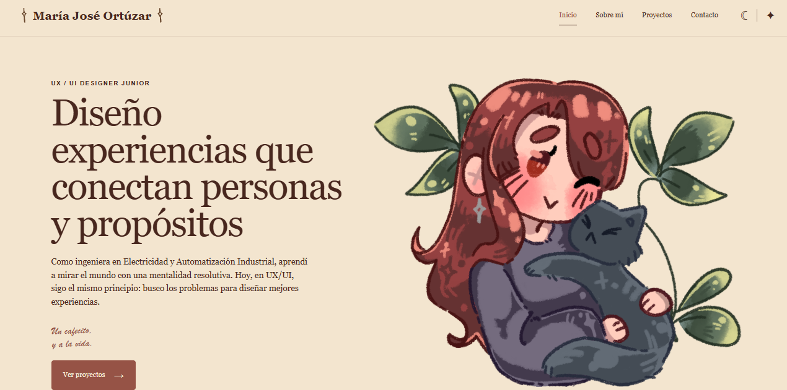
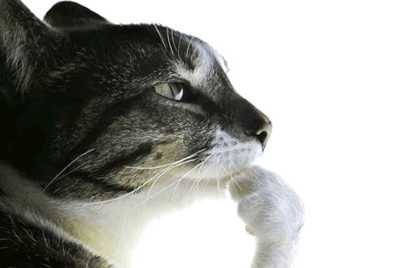
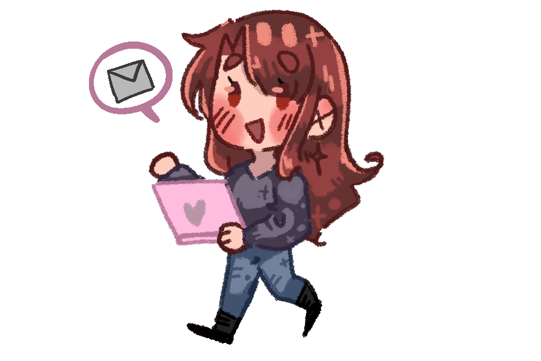

Metodologias
Me apoyo en distintas metodologías según el desafío, combinándolas de forma flexible para entender problemas, generar ideas y encontrar soluciones.
UX / UI DESIGNER JUNIOR
Como ingeniera en Electricidad y Automatización Industrial, aprendí a mirar el mundo con una mentalidad resolutiva. Hoy, en UX/UI, sigo el mismo principio: busco los problemas para diseñar mejores experiencias.
Un cafecito,
y a la vida.

Soy María José Ortúzar, UX/UI Designer Junior en transición desde la Ingeniería en Electricidad y Automatización Industrial.
Me apasionan la tecnología, la investigación y el diseño centrado en las personas, especialmente cuando permiten transformar problemas reales en soluciones digitales funcionales y accesibles.
Creo en el poder del diseño
para mejorar la vida cotidiana.
Creo en la empatía, la investigación y la iteración constante. Me interesa comprender a las personas, sus contextos y motivaciones para detectar oportunidades de mejora.
Cada desafío es una invitación a hacer preguntas, profundizar y construir soluciones que realmente tengan impacto.
Porque detrás de cada experiencia,
hay una persona.
Me apoyo en distintas metodologías según el desafío, combinándolas de forma flexible para entender problemas, generar ideas y encontrar soluciones.
Me ayuda a entender primero a las personas y luego explorar, probar e iterar soluciones que respondan realmente a sus necesidades.
Busco mantener las soluciones simples y claras, evitando agregar complejidad cuando no aporta valor a la experiencia.
Trabajo de forma iterativa, avanzando paso a paso, recibiendo feedback y haciendo ajustes a medida que el proyecto evoluciona.
Me permite abrir el problema para entenderlo mejor, definir dónde está realmente el desafío y luego explorar y aterrizar posibles soluciones.

Ideas, investigación y diseño para experiencias con sentido.

App de gestion de inventario
Diseño de una plataforma digital para optimizar la gestión de inventario, pedidos y comunicación con proveedores en cafeterías. El proyecto incluye investigación, definición del problema, diseño de la interfaz y prototipo interactivo

Research UX
Una investigación centrada en comprender comportamientos, motivaciones y percepciones detrás del uso nocturno del teléfono.

UX/UI · Desarrollo
Una experiencia interactiva para explorar y consultar información de diferentes Pokémon de forma simple y visual inspirados en diseños de pokedex de primera y sexta generación.
Ver proyecto ↗
En construcción
Este espacio también es un proyecto: mi laboratorio de ideas, aprendizaje y crecimiento constante.

Todavía hay espacio
para más proyectos.
Quizás el próximo sea contigo. 👀

Estoy abierta a nuevas oportunidades, colaboraciones y proyectos donde el mis habilidades y el diseño puedan generar un impacto real.
Contáctame →